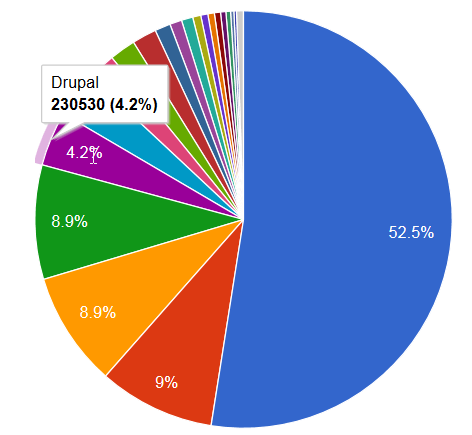
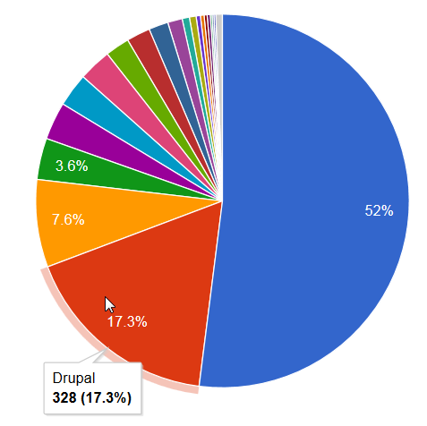
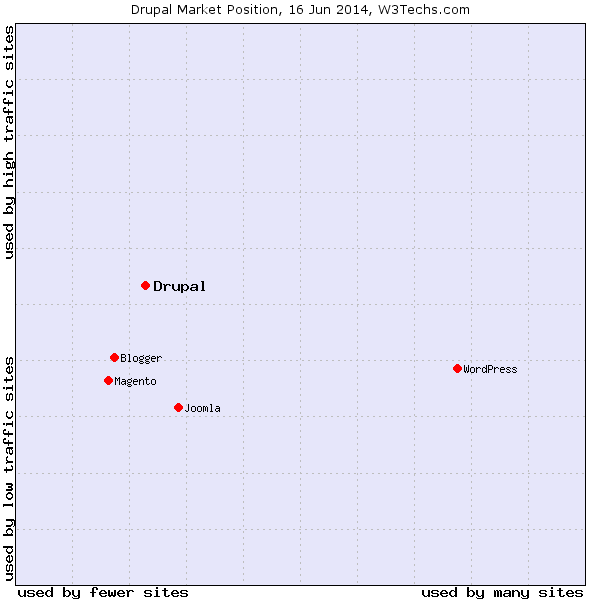
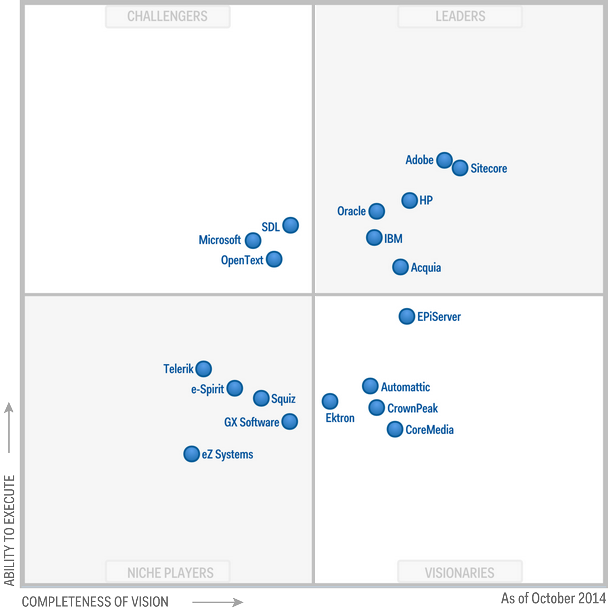
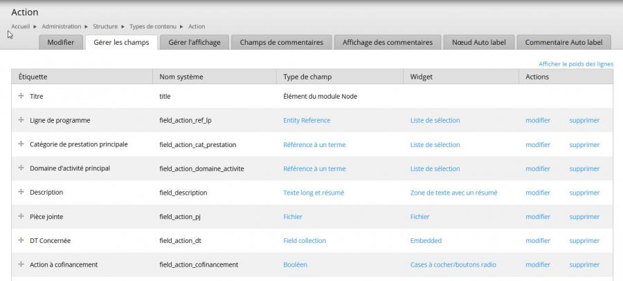
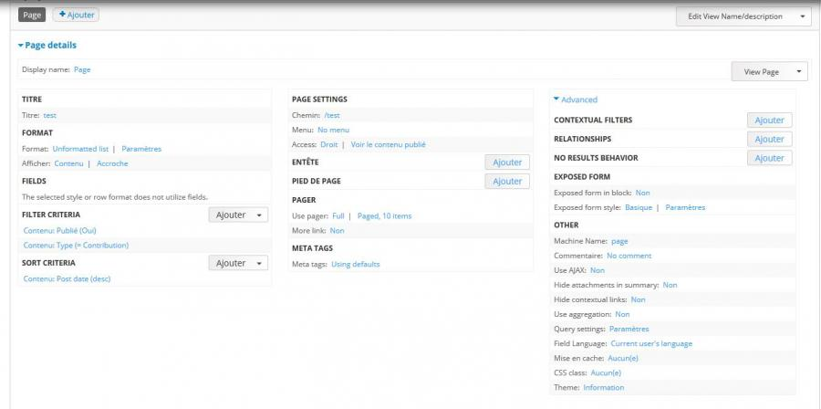
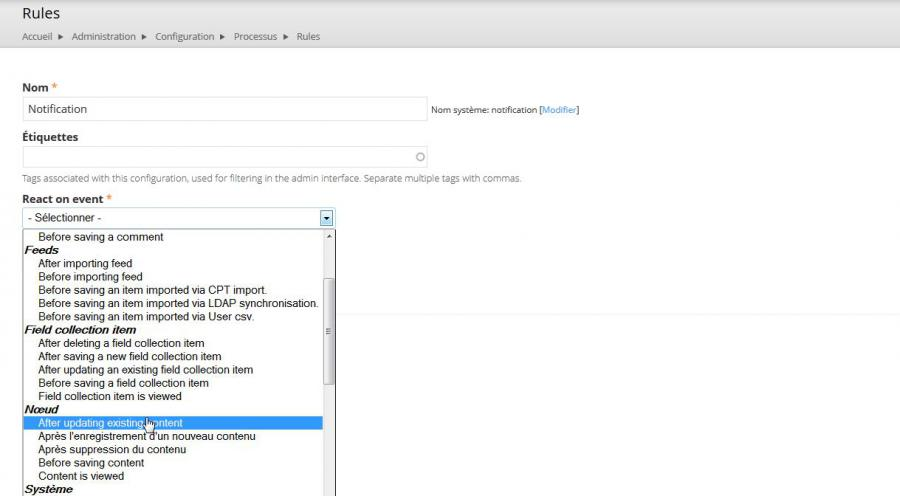

Présentation de
Drupal
Qu'est ce que Drupal ?
Drupal est un système de gestion de contenu (CMS), qui se double d'une plateforme de développement (CMF)
Créé en 2001 par Dries Buytaert, écrit en PHP et distribué sous les termes de la licence GNU General Public Licence.
Drupal permet de créer très rapidement un site / une application web sur mesure.
Les forces de Drupal
Une solution extrêmement flexible qui propose une très large couverture fonctionnelle.
- 26,931 Modules (dont 8 920 pour la version 7.x)
- 1,998 Themes
- 823 Distributions
Une commnunauté très active (la plus active dans le monde des CMS open source)
- 1 069 209 utilisateurs dans 230 pays parlant 181 langues propulsent Drupal
- 33 619 developpeurs
Une solution professionnelle
Une solution professionnelle, performante, robuste, et sécurisée
- Une des solutions les plus sécurisées (veille permanente, Security team, bulletin d'alerte, organisation, etc)
- Sites à très forte audience / complexes
- Quelques exemples : whitehouse.gov, gouvernement.fr, voyages-sncf.com, nasa.gov, le groupe radio france, arte.tv, bnpparibas.com, Harvard (myriade de plus de 2000 sites), le blog officiel de Twitter, etc.
- Une amélioration constante de la sécurité par la réalisation d'audits avancés
- Drupal.org : plateforme collaborative (1 million d'utilisateurs, 2 millions et quelques de contenus)
Une ligne directrice
- Un leadership continu assuré par Dries Buytart, CTO Acquia
- Une solution OpenSource disposant d'un support professionnel, au travers de la société Acquia entre autres
- Un développement du Coeur communautaire, mais aussi...
- ...par des experts employés par des entreprises utilisant Drupal (give back to Drupal)
Et une animation forte
DrupalCon : 2 conférences internationales par an
(~3000 participants)
Positionnement de Drupal
Quelques éléments
Part de marché sur Internet
 Source : datanyse.comPart de marché sur le Top 10K
 Source : datanyse.comPosition de Drupal sur le Web
 Source : w3techs.comLe carré magique de Gartner
Drupal est désormais un concurrent direct des solutions CMS propriétaires de Adobe, SiteCore, HP, Oracle et IBM
Drupal
un CMS/CMF puissant...
...et donc complexe
Une courbe d'apprentissage rude

Mais de moins en moins avec l'adoption des standards
L'écosystème propre à Drupal s'oriente vers les standards avec Drupal 8
L'intégration / l'utilisation du framework Symfony2 en lieu et place de l'ecosystème Drupalien
OOP, HTTPKernel, HTTPFoundation, Routing, DependencyInjection, ClassLoader, YAML
Sous le capot de Drupal
Un peu de vocabulaire
3 notions fondamentales
- les entités (à comparer à une classe)
- les bundles (à comparer à une instance de classe)
- les fields (champs)
Drupal fournit 3 entités de base
- les noeuds (contenu)
- les utilisateurs
- les termes de taxonomy (pour organiser le contenu)
Création de Bundles
- Pour chaque entité, on peut créer une infinité de bundles (modulo les users)
- Et à chacun de ces bundles, on peut associer autant de champs différents que nécessaire
- On obtient alors un "objet" spécifique qui disposera de tous les attributs métier voulus
Un exemple de Bundle
-

Un puissant constructeur de requêtes
-

Rules : un framework en soi
-

Extension des fonctionnalités
Presque 8 000 modules contribués pour étendre les fonctionnalités de Drupal
Et quand les logiques métier sont trop spécifiques :
- Field API
- Database API
- Entity API
- Form API
- Rules
- etc.
Tout comportement par défaut peut être modifié par le système de HOOK
Et la base de données !?
Point of View
Press ESC to enter the slide overview.
Hold down alt and click on any element to zoom in on it using zoom.js. Alt + click anywhere to zoom back out.
Works in Mobile Safari
Try it out! You can swipe through the slides and pinch your way to the overview.
Marvelous Unordered List
- No order here
- Or here
- Or here
- Or here
Fantastic Ordered List
- One is smaller than...
- Two is smaller than...
- Three!
Transition Styles
You can select from different transitions, like:
Cube -
Page -
Concave -
Zoom -
Linear -
Fade -
None -
Default
Themes
Reveal.js comes with a few themes built in:
Default -
Sky -
Beige -
Simple -
Serif -
Night
Moon -
Solarized
* Theme demos are loaded after the presentation which leads to flicker. In production you should load your theme in the <head> using a <link>.
Global State
Set data-state="something" on a slide and "something"
will be added as a class to the document element when the slide is open. This lets you
apply broader style changes, like switching the background.
Custom Events
Additionally custom events can be triggered on a per slide basis by binding to the data-state name.
Reveal.addEventListener( 'customevent', function() {
console.log( '"customevent" has fired' );
} );
Slide Backgrounds
Set data-background="#007777" on a slide to change the full page background to the given color. All CSS color formats are supported.
Image Backgrounds
<section data-background="image.png">Repeated Image Backgrounds
<section data-background="image.png" data-background-repeat="repeat" data-background-size="100px">Background Transitions
Pass reveal.js the backgroundTransition: 'slide' config argument to make backgrounds slide rather than fade.
Background Transition Override
You can override background transitions per slide by using data-background-transition="slide".
Clever Quotes
These guys come in two forms, inline:
“The nice thing about standards is that there are so many to choose from”
and block:
“For years there has been a theory that millions of monkeys typing at random on millions of typewriters would reproduce the entire works of Shakespeare. The Internet has proven this theory to be untrue.”
Pretty Code
function linkify( selector ) {
if( supports3DTransforms ) {
var nodes = document.querySelectorAll( selector );
for( var i = 0, len = nodes.length; i < len; i++ ) {
var node = nodes[i];
if( !node.className ) {
node.className += ' roll';
}
}
}
}
Courtesy of highlight.js.
Intergalactic Interconnections
You can link between slides internally, like this.
Fragmented Views
Hit the next arrow...
... to step through ...
any type- of view
- fragments
Fragment Styles
There's a few styles of fragments, like:
grow
shrink
roll-in
fade-out
highlight-red
highlight-green
highlight-blue
current-visible
highlight-current-blue
Spectacular image!

Export to PDF
Presentations can be exported to PDF, below is an example that's been uploaded to SlideShare.
Take a Moment
Press b or period on your keyboard to enter the 'paused' mode. This mode is helpful when you want to take distracting slides off the screen during a presentation.